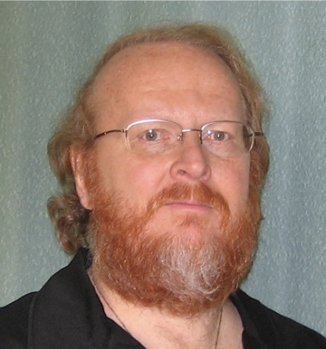
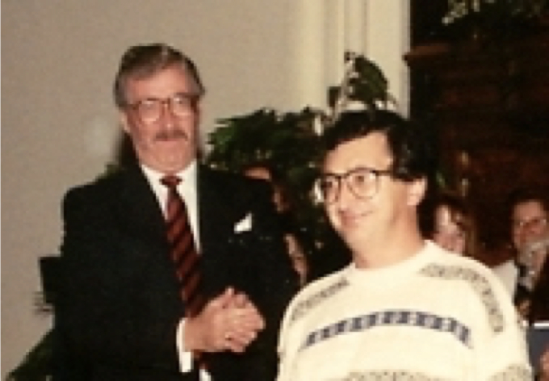

-1-MasterItem.svg)
Stories of Westminster United Church & its People / Page
160
Soloists in some of our performances:
1972, May 7th: Haydn
Lord Nelson Mass
— Mary Ann Taylor, Elona Schellenberg, Bruce Linney, Ted Marshall.
1974, May 5th: Beethoven Mass In C — same soloists
1975, May 4th: Mozart Requiem Mass — same soloists
1980: Haydn Lord Nelson Mass — same soloists with Pat Rabson, instead of Elona
1989: Mozart
Requiem
Mass and Haydn
Te Deum
— Susan LaGrand, Mary Ann Taylor,
Don Hodgson and Robert Young, (both Tenors), Fred Simpson.
1992: Our 100th anniversary — We celebrated
the occasion on November 8th. As part of the
celebration we commissioned a choir anthem
written by Winnipeg composer Sid Robinovitch
(far left, with Glen Harrison) —
Is This Not the
Fast?
— a setting of words from the book of
Isaiah. The soloists were Bruce Linney
and Fred Simpson (near left).
As a further part of the Anniversary we made a recording (the only full
recording of the choir extant.).
For years we sold it as a cassette tape, favourite anthems on one side,
favourite Christmas music on
the other. We now have had the whole tape digitized and it is offered here with
our pleasure.
Music at Westminster

